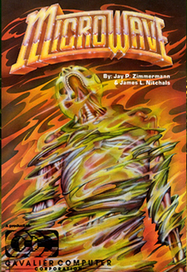

Microwave is described in Softline’s May 1982 issue as a variation on that “popular eat-the-dots game” (ahem Pac-Man). Instead of a pie-shaped head, you maneuver a teddy bear through a series of mazes, picking up objects and dodging aliens. In addition to losing lives by running into the aliens, you can also lose a life by running over a flashing grenade.

Impact
Microwave can be described as a clone of Pac-Man. Clones are games similar to previous popular games and were common during early PC history in the 1970s and 80s. While some clones could be considered knockoffs, Microwave was described as challenging and a good game if players were bored with the more traditional games of that genre.
Production History
Microwave was created in 1982. It was created by Jay P. Zimmermann and James L. Nitchals. Microwave was published by Cavalier Computer, which stopped making games after 1982.